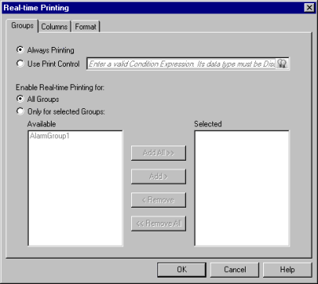
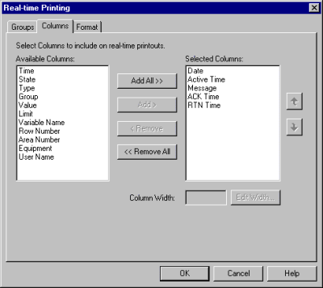
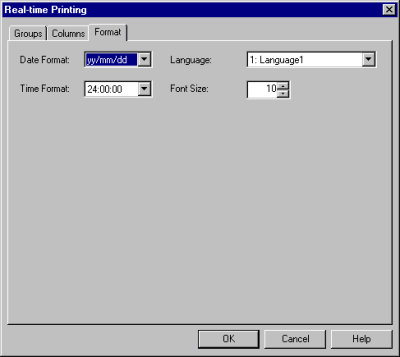

|
|
|
|
|
|
|
|
With Real-Time printing, you can print alarms whenever the alarm state changes between Active, Acknowledged (ACK), Unacknowledged (UNACK), and Returned to Normal (RTN).


Real-time printing is done in Log format. For more information about the log format, see Section 16.2.6, Setting Up an Alarm and Event Summary.
Real-time printing cannot be combined with the Language feature. All printing is done in the language selected in the Real-time Printing dialog box.
You can set up real-time printing with batch printing so that both can be done simultaneously.
Select the Alarms & Events node.
In the Property Inspector, select Enabled in the Real-time Printing property, and click  to open the Real-time Printing Settings dialog box.
to open the Real-time Printing Settings dialog box.
In the Real-time Printing Settings Groups Tab, select your printing options, and then select an Alarm Group or Alarm Category to print in Real-Time.

|
Property |
Description |
|
Always Printing |
Select to print the alarm message each time the alarm state changes for this project. |
|
Use Print Control |
Select to control real-time printing by an expression. When selected, the expression field is enabled. You can enter a conditional expression (true or false), or select an integer or BOOL variable (on or off). If Use Print Control is selected but the expression field is blank, an error message will display. If the BOOL variable value is Off, or the integer variable is equal to zero, or the expression is False, alarm messages are not printed. Real-time printing prints alarm messages when the alarm state changes. |
|
All Groups |
Select to print alarm messages triggered in all the alarm groups and alarm categories in the Available list. |
|
Only for selected Groups |
Select to print only the alarm groups and alarm categories in the Selected list. |
|
Available Groups |
Contains a list of all the alarm groups and alarm categories. |
|
Selected Groups |
Contains a list of the alarm groups and alarm categories you selected to print. |
Select the Columns tab.

Add the Columns you wish to print using the Add and Remove buttons.
You can change the Column order by using the  or
or  buttons.
buttons.
|
Property |
Description |
|
Available Columns |
Contains a list of all the available alarm columns. |
|
Selected Columns |
Contains a list of the columns you selected from the Available Columns list. |
Specify the Column Width (maximum of 999 pixels).
For more information on columns, see Section 16.2.6, Setting Up an Alarm Summary, Columns Tab.

In Real-Time printing of alarm messages, the Column Width settings will not work when using the Text Driver.
Select the Format tab.

If you add the Date column, set the Date display format in the Date Format property.
If you add Active Time, ACK Time, RTN Time, or Time, set the Time display format in the Time Format property.
Specify the font size. The minimum font size you can set is 6.
In real-time printing, the Language setting is fixed. You can print only the language you selected in the Language property.
Specify the colors for active, acknowledge (ACK), and returned to normal (RTN) alarm messages.
Click the colors to access the Color Palette, and then use the Color Palette to specify the color. For information on using the Color Palette, see Section 7.3.1, Color Palette.

The color option is only available when a color printer is selected as the Printer Type in the Target properties. For more information on color printers, see Section 27.1.1, Selecting a Printer.
You can only use the following eight colors: Black, blue, green, aqua, purple, red, yellow, and white. If you select a color other than the eight colors, the color is reduced and printed in the color that is displayed in the Black/White window.

You can only specify the font color. You cannot specify the background color for alarm printouts.